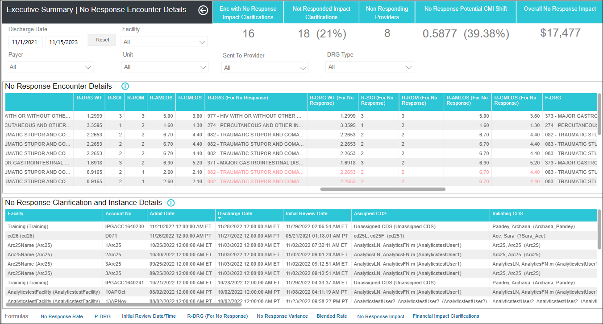
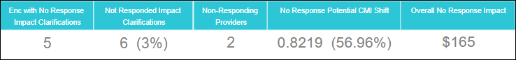
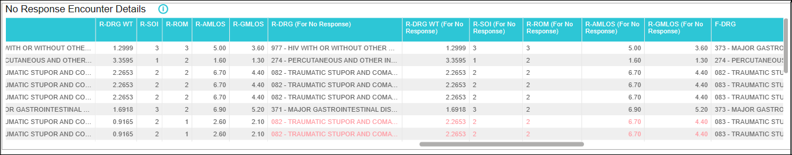
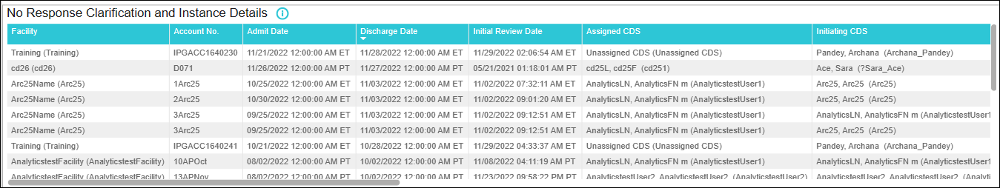

No Response Encounter Details
Overview: The No Response Encounter Details dashboard enables CDI Managers/Directors to analyze the encounters with financial impact clarifications that were not responded and view the missed dollar amount associated with it and work with providers to improve the communication with CDSs and overall CDI program adoption
- What is the overall potential missed reimbursement?
- How many encounters had at least one no response impact clarification?
- What is the potential missed reimbursement for a specific provider?
- What is the potential missed reimbursement for Medicare cases?
- What are the clarification details of the impact clarifications that were not responded?
- Which providers are not responding to the clarifications sent by the CDS team?
- Which diagnosis codes are most frequently resulting in 'No Response' impact clarifications?
- Which providers should I target to help improve the CDS and Provider communication process and CDI program adoption?
Navigation: On the Analytics home page left side panel, navigate to .
- KPI Cards: Enc with No Response Impact Clarifications, Not Responded Impact Clarifications, Non-Responding Providers, No Response Potential CMI Shift, and Overall No Response Impact.
- No Response Encounter Details Tabular Chart
- No Response Clarification and Instance Details chart
On the top panel, you can select desired values for the slicers (refer Report Slicers ) and the corresponding data gets generated in the tabular chart.
For filters on all pages, refer Filters on all Pages.
For information about footnotes, refer Footnotes.

No Response Encounter Details - KPI Cards

| KPI Card | Definition |
|---|---|
| Enc with No Response Impact Clarifications |
Displays the count of encounters with at least one Financial Impact clarification with Final Response as No Response for the selected time period. Note:
Clarification with a standard or custom ‘Primary Type at Reconciliation’ defined as ‘Financial’ in the admin configuration is a Financial Impact Clarification. Clarifications with Status 'REMOVED' or 'RETRACTED' are excluded from the count. Clarifications for "Review Not Needed" encounter status should not be considered for this metric calculation. Clarifications that do not have a FINAL response are not considered in this calculation. |
| Not Responded Impact Clarifications |
Displays the count and percentage of Financial Impact Clarifications that were not responded by the providers and with Final Response as No Response for the selected time period. Format: Not Responded Impact Clarifications (No Response Rate). E.g.12 (56%). Note:
Not Responded Impact Clarifications = Count of Financial Impact Clarifications with Final Response as “No Response” for the selected time period. No Response Rate = Out of total Financial Impact clarifications sent, the percentage of Financial Impact Clarifications with Final Response as “No Response” . No Response Rate = (Financial Impact Clarifications with Final Response as No Response / Count of Financial Impact Clarifications Sent) *100. |
| Non Responding Providers |
Displays the count of sent to providers with at least one financial impact clarification instance responded as No Response, i.e. Provider Response Field = No Response. Note:
Clarification with a standard or custom ‘Primary Type at Reconciliation’ defined as ‘Financial’ in the admin configuration is a Financial Impact Clarification. Clarifications with Status 'REMOVED' or 'RETRACTED' are excluded from the count. Clarifications for "Review Not Needed" encounter status should not be considered for this metric calculation. Clarifications that do not have a FINAL response are not considered in this calculation. |
| No Response Potential CMI Shift |
Displays the Potential CMI shift and percentage for the financial impact clarifications that were not responded by the providers for the selected time period. Format: No Response Potential CMI Shift (Potential CMI Shift % ). E.g. 1.4532 (1.67%). |
| Overall No Response Impact |
Displays the overall potential dollar amount associated with the financial impact clarifications that the providers did not respond for the selected time period. Overall No Response Impact = $(No response Potential CMI Shift * Blended Rate). Format: $4512. |

This chart displays a tabular detailed encounter view of all the Financial Impact Clarifications with Final Response as No Response.
| column | Description |
|---|---|
| Facility | Displays the facility assigned to the encounter in the format Facility Description (Facility ID). |
| Account No. | The Account Number assigned to the encounter. |
| MRN | The MRN assigned to the encounter. Example: MRN2021001. |
| Patient Name | The name of the patient associated with the encounter.
Example: Last Name, First Name. |
| Admit Date |
The Admission Date and Time assigned to the encounter in the facility's timezone. Example: 08/08/2019 12:00:00 AM MST. |
| Discharge Date |
The Discharge Date and Time assigned to the encounter in the facility's timezone. This column is blank for the encounters that do not have a discharge date assigned. Example: 08/08/2019 12:00:00 AM MST. |
| LOS | The length of stay in days for each encounter. Note:
LOS value is displayed in blue font, when LOS is greater than GMLOS for the encounter. W-GMLOS value is considered, if F-GMLOS value is blank. |
| Assigned CDS |
Displays the CDS assigned to the encounter in the format Last Name, First Name MI (CDS ID). Format: Last Name, First Name MI (CDS ID). |
| Initial Review Date |
The date and time when the initial review was performed on the encounter. The date is displayed in the Facility's time-zone. Example: 09/24/2022 10:10:00 AM ET. Note:
If the Initial Review Date/time is after the Discharge
Date/Time, Initial Review Date/Time is displayed in the red
font. |
| Initial Review CDS |
The name of the CDS who performed the initial review in the format Last Name, First Name MI (CDS ID). Example: Ryan, Melissa (rmelissa) |
| Tracking Codes |
The Tracking Codes assigned to the encounter in comma separated format. You can view a maximum of 10 tracking codes for an encounter. Example: Quality Review, Prov Education. |
| Rank at Initial Review |
The rank assigned to the encounter prior to the Initial Review. This column is blank for the encounters that do not have a ‘Rank at Initial Review' assigned. Example: 1, 2, etc. |
| No Response Impact Clarifications |
The count of Financial Impact clarifications with the status other than DELETED or RETRACTED sent for the encounter. Example: 2. Note:
Clarification with a standard or custom ‘Primary Type at Reconciliation’ defined as ‘Financial’ in the admin configuration is a Financial Impact Clarification. Clarifications with Status 'DELETED' or 'RETRACTED' are excluded from the count. Clarifications for "Review Not Needed" encounter status are not considered for this metric calculation. |
| No Response Clarification Subject | Displays the subject of the financial impact clarifications with Final Response as No Response. |
| Primary Rec. Type | Displays the Primary Rec Type of the Financial Impact clarification with Final Response as No Response. |
| Financial Impact Clarifications with response Agreed, Alternative Diagnosis, Other Explanation |
The count of sent Financial Impact clarifications with Final response as Agreed, Alternative Diagnosis, and Other Explanation. E.g. 2. Note:
Clarification with a standard or custom ‘Primary Type at Reconciliation’ defined as ‘Financial’ in the admin configuration is a Financial Impact Clarification. Clarifications with Status 'DELETED' or 'RETRACTED' are excluded from the count. Clarifications for "Review Not Needed" encounter status are not considered for this metric calculation. Clarifications that do not have a FINAL response are not considered in this calculation. |
| W-DRG |
The 'primary' Working DRG along with the description displayed on the Review page. Example: 872 - SEPTICEMIA OR SEVERE SEPSIS WITHOUT MV >96 HOURS WITHOUT MAJOR COMPLICATION OR COMORBIDITY (MCC). |
| W-DRG WT |
The WT associated with the 'primary' Working DRG displayed on the Review page. Example: 1.0393. |
| W-SOI |
The 'SOI' from the working review. Example: 2. Note:
If the SOI associated with the primary working DRG is not
available, then the SOI associated with the advanced working
DRG is displayed. |
| W-ROM |
The 'ROM' from the working review. Example: 3. Note:
If the ROM associated with the primary working DRG is not
available, then the ROM associated with the advanced working
DRG is displayed. |
| W-AMLOS |
The 'AMLOS' from the working review. Example: 3.1. Note:
If the AMLOS associated with the primary working DRG is
not available, then the AMLOS associated with the advanced
working DRG is displayed. |
| W-GMLOS |
The 'GMLOS ' from the working review. Example: 3.2. Note:
If the GMLOS associated with the primary working DRG is
not available, then the GMLOS associated with the advanced
working DRG is displayed. |
| P-DRG |
The 'primary' Possible DRG along with the description displayed on the Review page. Example: 872 - SEPTICEMIA OR SEVERE SEPSIS WITHOUT MV >96 HOURS WITHOUT MAJOR COMPLICATION OR COMORBIDITY (MCC). Note:
This column displays the ‘Working DRG’ value in the orange
font for the encounters that have a ‘Working DRG’ assigned
if the ‘Possible DRG’ is blank or null. |
| P-DRG WT |
The WT associated with the 'primary' Possible DRG displayed on the Review page. Example: 1.0393. Note:
This column displays the ‘Working DRG WT’ value in the
orange font for the encounters that have a ‘Working DRG’
assigned if the ‘Possible DRG’ is blank or null. |
| P-SOI |
This column displays the 'SOI' from the possible review. E.g. 2. Note:
If the SOI associated with the
primary possible DRG is not available, then the SOI
associated with the advanced possible DRG is
displayed. |
| P-ROM |
his column displays the 'ROM' from the possible review. E.g. 3. Note:
If the ROM associated with the
primary possible DRG is not available, then the ROM
associated with the advanced possible DRG is
displayed. |
| P-AMLOS |
Displays the 'AMLOS' from the possible review. E.g. 3.1 Note:
If the AMLOS associated with the
primary possible DRG is not available, then the AMLOS
associated with the advanced possible DRG is
displayed. |
| P-GMLOS |
Displays the 'GMLOS ' from the possible review. E.g. 3.2. Note:
If the GMLOS associated with the
primary possible DRG is not available, then the GMLOS
associated with the advanced possible DRG is
displayed. |
| R-DRG |
Displays both code and description of the Reconciliation Assessment DRG along with the description displayed on the Reconciliation page. Example: 872 - SEPTICEMIA OR SEVERE SEPSIS WITHOUT MV >96 HOURS WITHOUT MAJOR COMPLICATION OR COMORBIDITY (MCC). |
| R-DRG WT |
The WT associated with the Reconciliation Assessment DRG displayed on the Reconciliation page. Example: 1.0393. |
| R-SOI |
The 'SOI' from the Reconciliation Assessment. Example: 1. This column is blank for the encounters that do not have a ‘Initial Review Date/Time'. Note:
If the SOI associated with the primary Reconciliation
Assessment DRG is not available, then the SOI associated
with the advanced Reconciliation Assessment DRG is
displayed. |
| R-ROM |
The 'ROM' from the Reconciliation Assessment. This column is blank for the encounters that do not have a ‘Initial Review Date/Time'. Example: 1. Note:
If the ROM associated with the primary Reconciliation
Assessment DRG is not available, then the ROM associated
with the advanced Reconciliation Assessment DRG is
displayed. |
| R-AMLOS |
The 'AMLOS' from the Reconciliation Assessment. Example: 3.1. This column is blank for the encounters that do not have a ‘Initial Review Date/Time'. Note:
If the AMLOS associated with the primary Reconciliation
Assessment DRG is not available, then the AMLOS associated
with the advanced Reconciliation Assessment DRG is
displayed. |
| R-GMLOS |
The 'GMLOS' from the Reconciliation Assessment. Example: 2.4. This column is blank for the encounters that do not have a ‘Initial Review Date/Time'. Note:
If the GMLOS associated with the primary Reconciliation
Assessment DRG is not available, then the GMLOS associated
with the advanced Reconciliation Assessment DRG is
displayed. |
| R-DRG (For No Response) |
Displays both code and description of the regrouped (from backend grouping) Reconciliation Assessment DRG along with the description. Example: 872 - SEPTICEMIA OR SEVERE SEPSIS WITHOUT MV >96 HOURS WITHOUT MAJOR COMPLICATION OR COMORBIDITY (MCC). Note:
This is displayed in Red font, only
for cases with Financial Impact Clarifications with Final
Response as No Response and other Financial Impact
Clarifications with Final Response as Agreed/Alt DX/Other
Explanation are present. For other scenarios, display the
R-DRG. |
| R-DRG WT (For No Response) |
Displays the WT associated with the regrouped (from backend grouping) Reconciliation Assessment DRG. Example: 1.0393. Note:
This is displayed in Red font, only for
cases with Financial Impact Clarifications with Final response
as No Response and other Financial Impact Clarifications present
with Final response as Agreed/Alt DX/Other Explanation. For
other scenarios, display the R-DRG WT. |
| R-SOI (For No Response) |
Displays the 'SOI' from the regrouped (from backend grouping) Reconciliation Assessment. Example: 1. Note:
This is displayed in Red font, only
for cases with Financial Impact Clarifications with Final
Response as No Response and other Financial Impact
Clarifications with Final Response as Agreed/Alt DX/Other
Explanation are present. For other scenarios, display the
R-SOI. |
| R-ROM (For No Response) |
Displays the 'ROM' from the regrouped (from backend grouping) Reconciliation Assessment. Example: 1 Note:
This is displayed in Red font, only
for cases with Financial Impact Clarifications with Final
Response as No Response and other Financial Impact
Clarifications with Final Response as Agreed/Alt DX/Other
Explanation are present. For other scenarios, display the
R-ROM. This column is blank for the encounters that do not have a ‘Initial Review Date/Time' |
| R-AMLOS (For No Response) |
Displays the 'AMLOS' from the regrouped (from backend grouping) Reconciliation Assessment. Example: 3.1. Note:
This is displayed in Red font, only
for cases with Financial Impact Clarifications with Final
Response as No Response and other Financial Impact
Clarifications with Final Response as Agreed/Alt DX/Other
Explanation are present. For other scenarios, display the
R-AMLOS. This column is blank for the encounters that do not have a ‘Initial Review Date/Time'. |
| R-GMLOS (For No Response) |
Displays the 'GMLOS' from the regrouped (from backend grouping) Reconciliation Assessment. Example: 2.4. Note:
This is displayed in Red font, only
for cases with Financial Impact Clarifications with Final
Response as No Response and other Financial Impact
Clarifications with Final Response as Agreed/Alt DX/Other
Explanation are present. For other scenarios, display the
R-GMLOS. This column is blank for the encounters that do not have a ‘Initial Review Date/Time' |
| F-DRG |
The code and description of the Final Coded DRG along with the description displayed on the Reconciliation page. Example: 872 - SEPTICEMIA OR SEVERE SEPSIS WITHOUT MV >96 HOURS WITHOUT MAJOR COMPLICATION OR COMORBIDITY (MCC). This column is blank for the encounters that do not have a ‘Initial Review Date/Time' |
| F-DRG WT |
Displays the WT associated with the Final Coded DRG displayed on the Final Coded Summary section. Example: 1.0393 This column is blank for the encounters that do not have a ‘Initial Review Date/Time'. |
| F-SOI |
Displays the Final Coded. 'SOI'. Example: 2 This column is blank for the encounters that do not have a ‘Initial Review Date/Time' Advanced SOI Values are used if Primary SOI values are blank |
| F-ROM |
Displays the Final Coded. 'ROM'. Example: 3. This column is blank for the encounters that do not have a ‘Initial Review Date/Time'. Advanced ROM Values are used if Primary ROM values are blank. |
| F-AMLOS |
Displays the Final Coded. 'AMLOS'. Example: 3.1. This column is blank for the encounters that do not have a ‘Initial Review Date/Time'. Advanced AMLOS Values are used if Primary AMLOS values are blank. |
| F-GMLOS |
Displays the Final Coded. 'GMLOS'. Example: 3.2 This column is blank for the encounters that do not have a ‘Initial Review Date/Time' Advanced GMLOS Values are used if Primary GMLOS values are blank |
| No Response Variance |
Displays the shift in the WT at the encounter level. No Response Encounter Variance = (DRG WT with No Response Code review- DRG WT w/o No Response code review) Encounter Variance is not calculated for the encounters that do not have an initial review date. Review Not Needed Encounters are not considered. Rounded to 4 decimal places. E.g. 1.0178 |
| Blended Rate |
Displays the Blended Rate associated with the payer/Grouper assigned to the encounter. The value is displayed in dollars. Example: $7512 When the Blended Rate is not available, the Operating Federal rate is displayed. |
| No Response Reimbursement Impact |
Displays the ‘No Response Reimbursement Impact’ value for the encounter. 'Reimbursement Impact' for an encounter is calculated using the below formula:
Note:
When reconciliation DRG and
reconciliation DRG weights for an encounter are matching with
your backend grouping reconciliation weights, then there is no
financial shift, in that case the 'No Response Variance' is
equal to zero and No Response Reimbursement Impact is displayed
as $0. |
| Impact Type |
Displays the Impact Type assigned to the encounter.
|
| Encounter Status |
Displays the Encounter Status assigned to the encounter. E.g. Reconciled Impact, Reconciled - No Impact |
| Payer | Displays the Payer assigned to the encounter in the format Payer Description (Payer ID). |
| Grouper | Displays the Grouper version associated with the payer assigned to the encounter. |
| Unit | Displays the Unit assigned to the encounter. |
| Patient Type | Displays the Patient Type assigned to the encounter. |
| Visit Type | Displays the Visit Type assigned to the encounter. |
| Discharge Status |
Displays the Discharge Status assigned to the encounter in the format 'Discharge Status ID - Discharge Status Description'. E.g. 20 - Expired. |

This chart displays a clarification and instance level details of all Financial Impact Clarifications instances with Final Response as No Response.
| column | Description |
|---|---|
| Facility | Displays the facility assigned to the encounter in the format Facility Description (Facility ID). |
| Account No. | Displays the Account Number assigned to the encounter. |
| MRN | Displays the MRN assigned to the encounter. Example: MRN2021001. |
| Patient Name | Displays the name of the patient associated with the encounter.
Example: Last Name, First Name. |
| Admit Date |
The Admission Date and Time assigned to the encounter in the facility's timezone. Example: 08/08/2019 12:00:00 AM MST. |
| Discharge Date |
Displays the Discharge Date and Time assigned to the encounter in the facility's timezone. This column is blank for the encounters that do not have a discharge date assigned. Example: 08/08/2019 12:00:00 AM MST. |
| Initial Review Date |
Displays the date and time when the initial review was performed on the encounter. The date is displayed in the Facility's time-zone. Example: 09/24/2022 10:10:00 AM ET. Note:
If the Initial Review Date/time is
after the Discharge Date/Time, Initial Review Date/Time is
displayed in the red font. |
| Assigned CDS |
Displays the CDS assigned to the encounter in the format Last Name, First Name MI (CDS ID). Format: Last Name, First Name MI (CDS ID). |
| Initiating CDS |
|
| Follow-up CDS |
|
| No Response Clarification Subject |
Displays the subject of the financial impact clarification with final response as No Response in the format: Clarification Code Description. Generic clarifications that do not have code are also displayed. Example: E871 Hypo-osmolality and hyponatremia |
| Instance Sent Date |
|
| Instance Sent To |
|
| Instance Response Date |
Displays the response date and time of the clarification instance. The date/time is in the Facility's time-zone. Response Date is displayed in red font when the response date/time is after discharge date/time. (Response Date/Time > Discharge Date/Time). Format: 07/01/2020 03:58:53 PM ET. |
| Primary Type |
|
| Other Type |
|
| Primary Rec. Type | Displays the primary reconciliation type associated with the
clarification. Note: Both Standard and Custom
Clarification Types are considered. |
| Other Rec. Type |
|
| Clarification Status |
Displays the status associated with the clarification. (E.g. Sent, Closed, etc.) Clarifications with the Status ‘REMOVED' , 'RETRACTED' and 'FAILED’ are not displayed. |
| Clarification Closed Date |
|
| Electronic |
|
| Slicer | Description |
|---|---|
| Discharge Date |
Allows the user to select the discharge date range. Format: Between Date range, Example: 3/1/2023 - 3/31/2022. Default: Last 1 calendar months date range selected by default. |
| Reset |
|
| Facility |
|
| Payer |
|
| Unit |
|
| Sent to Provider |
|
| DRG Type |
Displays the type (Medical, Surgical, Unknown) associated with the Final MS-DRG Code: Values: S- Surgical M- Medical U- Unknown |
| Filter | Description |
|---|---|
| Patient Type |
|
| Admit Service |
|
| Visit Type |
|
| DRG Specialty |
|
| Formulas | Text on hover |
|---|---|
| No Response Rate | Out of total Financial Impact clarifications sent, the percentage of Financial Impact Clarifications with Final Response as “No Response”. No Response Rate = (Financial Impact Clarifications with Final Response as No Response / Count of Financial Impact Clarifications Sent) *100. |
| P-DRG | P-DRG: Displays the ‘Working DRG’ value in orange font for the reconciled encounters with blank ‘Possible DRG’. P-DRG WT: Displays the ‘Working DRG WT’ value in orange font for the reconciled encounters with blank ‘Possible DRG’. |
| Initial Review Date/Time | Displays Initial Review Date/time in red font when the Initial Review Date/Time > Discharge Date/Time. |
| R-DRG (For No Response) | R-DRG (For No Response): Displays the regrouped Reconciliation
DRG (from backend grouping) along with the description in red font.
R-DRG WT (For No Response): Displays the regrouped Reconciliation
DRG WT (from backend grouping) along with the description in red
font. Note: This is displayed in Red font,
only for cases with Financial Impact Clarifications with Final
Response as No Response and other Financial Impact
Clarifications with Final Response as Agreed/Alt DX/Other
Explanation are present; For other scenarios, display the
R-DRG/R-DRG WT details. |
| No Response Variance |
Displays the shift in the WT at the encounter level. No Response Encounter Variance = (DRG WT with No Response Code review- DRG WT w/o No Response code review). Encounter Variance is not calculated for the encounters that do not have an initial review date. Review Not Needed Encounters are not considered. Rounded to 4 decimal places. E.g. 1.0178. Note:
When reconciliation DRG and
reconciliation DRG weights for an encounter are matching with
your backend grouping reconciliation weights, then there is no
financial shift, in that case the 'No Response Variance' is
equal to zero and No Response Reimbursement Impact is displayed
as $0. |
| Blended Rate | Configured at payer level. When Blended Rate is not available, Operating Federal rate is displayed. |
| No Response Impact | The sum of No Response Impact ((Potential CMI with No Response Impact Clari - Potential CMI w/o No Response Impact Clari) * Blended Rate) for all Reconciled - No Impact(Impact Type: No Impact) & Reconciled Impact (Impact Type: SOI/ROM, Financial, Both). E.g. $5,234,786. |
| Financial Impact Clarifications | Clarification with a standard or custom ‘Primary Type at Reconciliation’ defined as ‘Financial’ in the admin configuration. Clarification Status: Includes all clarification statuses except 'Removed' or 'Retracted'. |